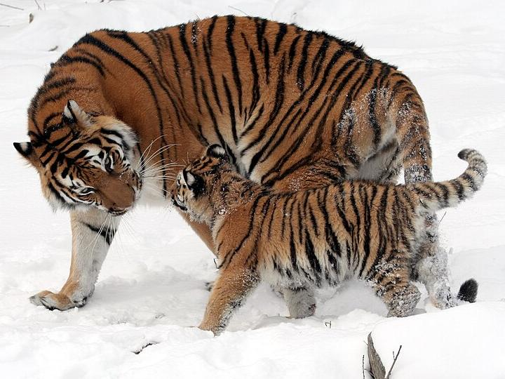

About our club
Riverside Big Cat Guardians is run by volunteers of all ages who want wild big cats to have a future.

Our story
The club started in 2023, when four students at Riverside High School watched a film about wild tigers. They learned that there were only a few thousand tigers left in the wild, and they wanted to do something about it.
They started with a bake sale and a poster in the school hallway. Today the club has more than 40 volunteers, from middle school students to grandparents, and we run an event almost every month.
We are not scientists, and we do not work with animals ourselves. Our job is to help people in our town understand big cats, and to support the experts who protect them in the wild.
Our mission is simple: learn the facts, share them with our community, and raise money for big cat conservation.
What we believe
- Every big cat species deserves a future in the wild.
- Good choices start with good facts, so we check everything we share.
- Anyone can help, whatever their age or background.
- People who live near big cats should be part of the solution.
Who runs the club
Our leaders are elected by club members every September.
- Maya TorresClub president
- Daniel OkaforEvents coordinator
- Lin ZhaoFundraising lead
- Sam PatelWebsite and social media
Our last club year
| What we counted | Total |
|---|---|
| Events held | 14 |
| Active volunteers | 42 |
| Volunteer hours | 610 |
| School talks given | 9 |
| Money raised for conservation | $3,850 |
Want to be part of next year’s numbers? Fill in our volunteer form.